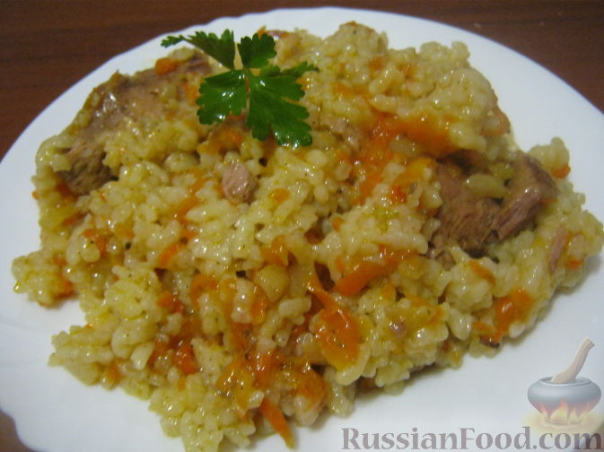

Быстрый плов из свинины
Этот рецепт, так сказать, по мотивам настоящего узбекского плова. Для тех, кто не ест свинину, я рекомендую сделать рецепт с курицей. Быстро и вкусно.
Необходимые ингридиенты:
- Свинина (или курица) - 600 г
- Рис - 1,5 стакана
- Морковь - 1 шт.
- Лук репчатый - 2 шт.
- Масло растительное - 30 г
- Соль - по вкусу
- Перец - по вкусу
- Сахар - 0,5 ч. ложки
- Приправа для плова - 0,5 ч. ложки
Приготовление пошагово:
Свинину вымыть, обсушить.
Мясо разрезать на порционные кусочки, размером около 2х2 см.
Разогреть сковороду, налить растительное масло. Выложить мясо. Жарить на среднем огне до золотистой корочки, переворачивая кусочки (минут 10-15).
Очистить и помыть морковь. Морковь натереть на крупной терке или нарезать тонкой соломкой.
Очистить, помыть лук, нарезать мелко кубиками или тонкими полукольцами.
Подготовленное мясо выложить в казанок. В сковороду в горячее масло выложить морковь и лук. Тушить, помешивая, на среднем огне 2-3 минуты. К мясу в казанок выложить зажарку.
Вскипятить чайник. Мясо с овощами в казанке перемешать. Посолить, поперчить, добавить любимые специи, сахар. Перемешать. Залить кипятком. Довести до кипения.
Рис, желательно длиннозерный, хорошо промыть. Выложить на мясо. Если есть необходимость, добавить кипятка. Рис должен покрываться водой на 2 пальца. Накрыть крышкой, убавить огонь до минимального. Варить плов из свинины до готовности риса, около 40-45 минут.
Плов готов! Приятного аппетита!
